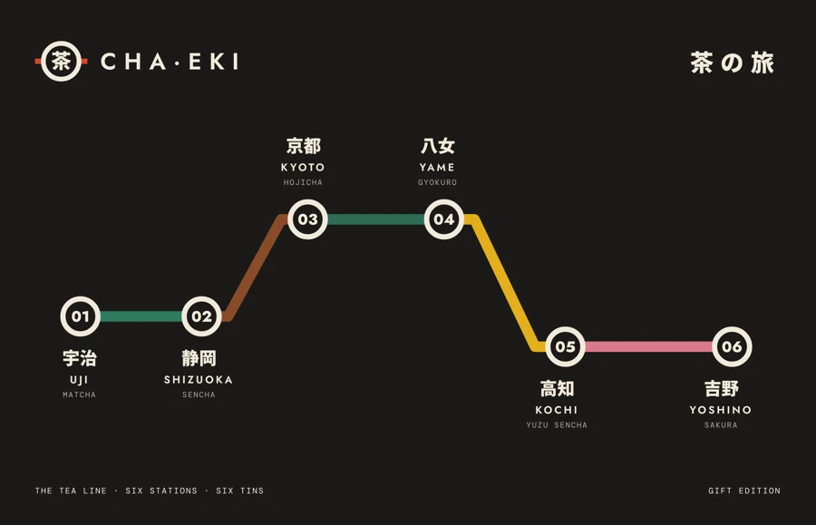

Japanese tea · Six stations
Six teas.One line.
A journey through Japan’s tea country, one station at a time. Every tea is a stop, every pack is a ticket.
Board the trainDepartures発車
道 In Japan, tea is a path: chadō, the way of tea. We took the word literally. CHA·EKI follows a railway line through six tea regions, from the shaded fields of Uji to the cherry hills of Yoshino.
Final stop · The tea house
The ceremony.
- 01Sift 2 g of matcha into the bowl.
- 02Pour 70 ml of water at 80°C.
- 03Whisk fast in an M shape for 15 seconds.
- 04A fine foam. Drink it in three sips.
The packs
Every pack is a ticket.
Each tea carries its station number, its landscape and its place on the line. Lined up together, the packs draw the whole route.
Gift edition
The whole line in one box.
Open the lid and the route map unfolds: six stations, six tins, one journey to give.
